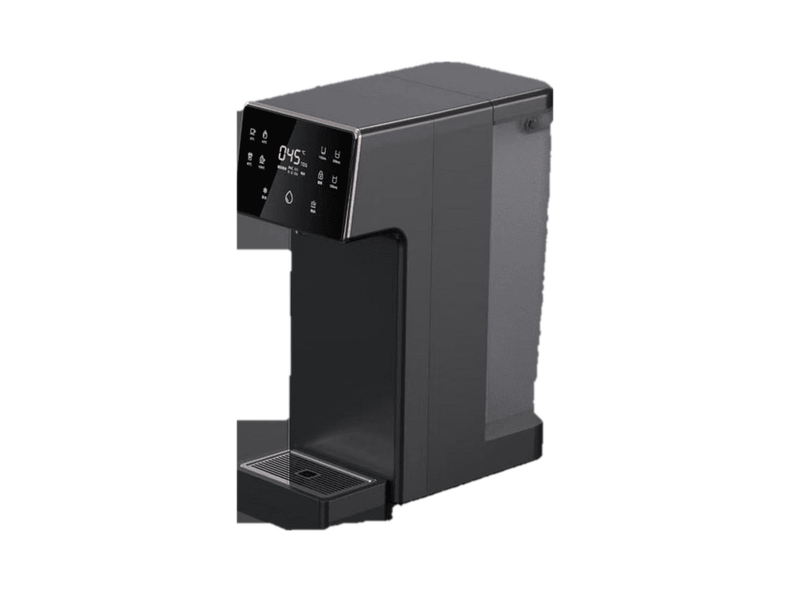
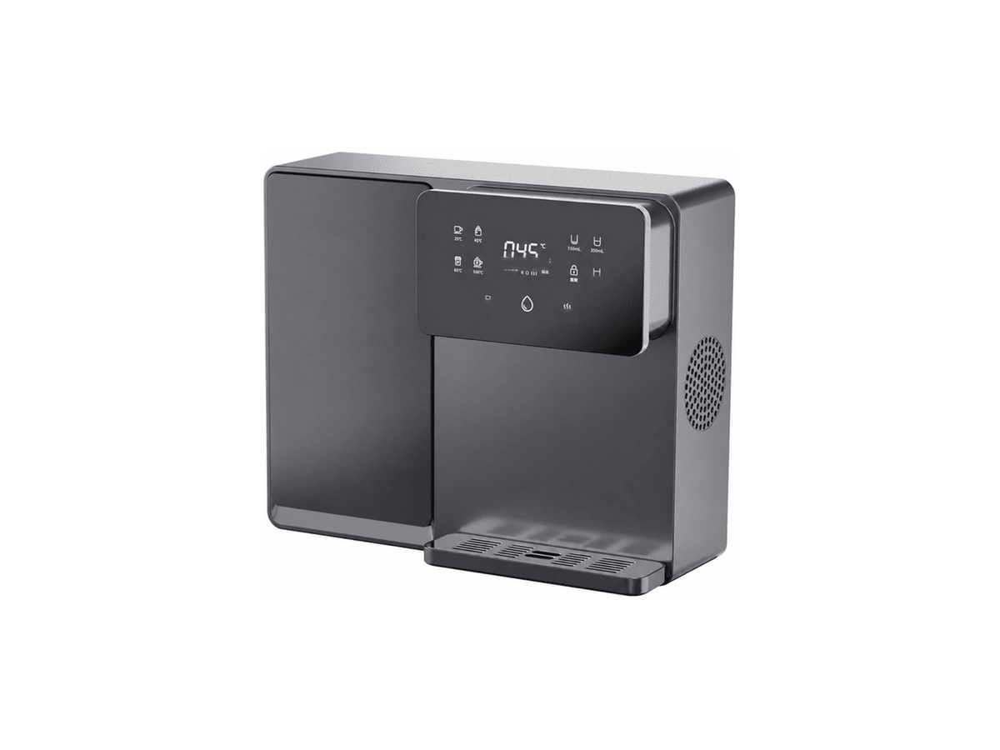
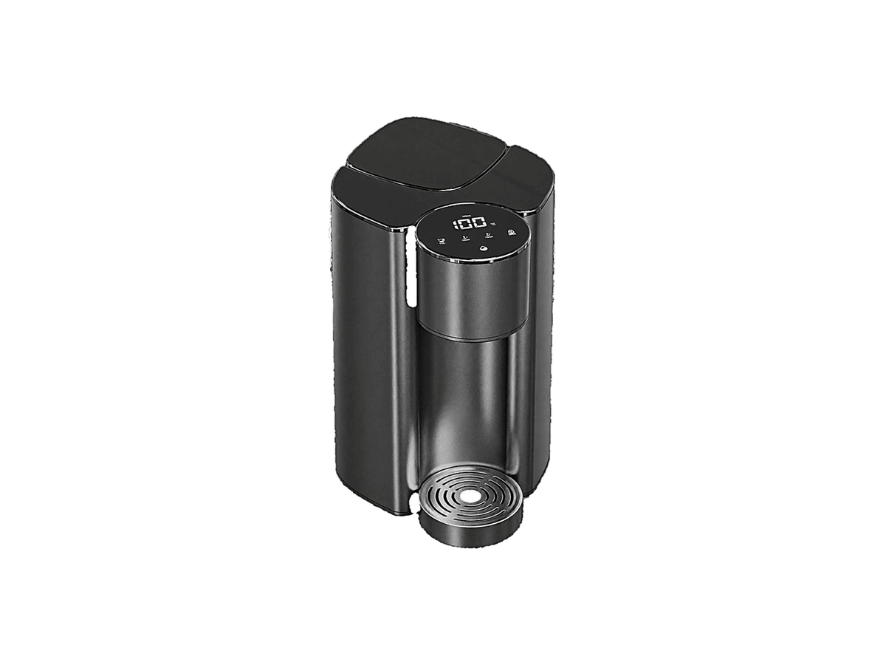
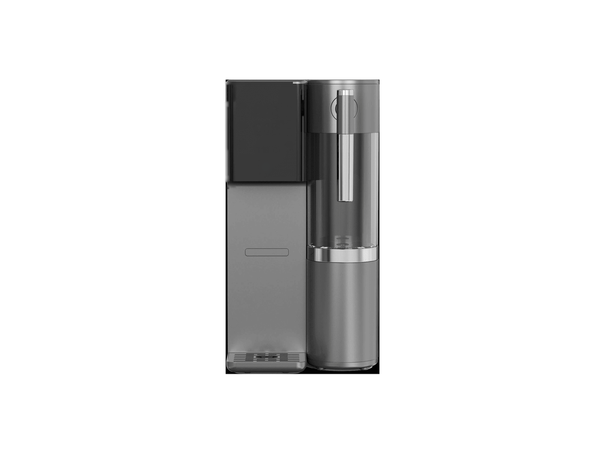
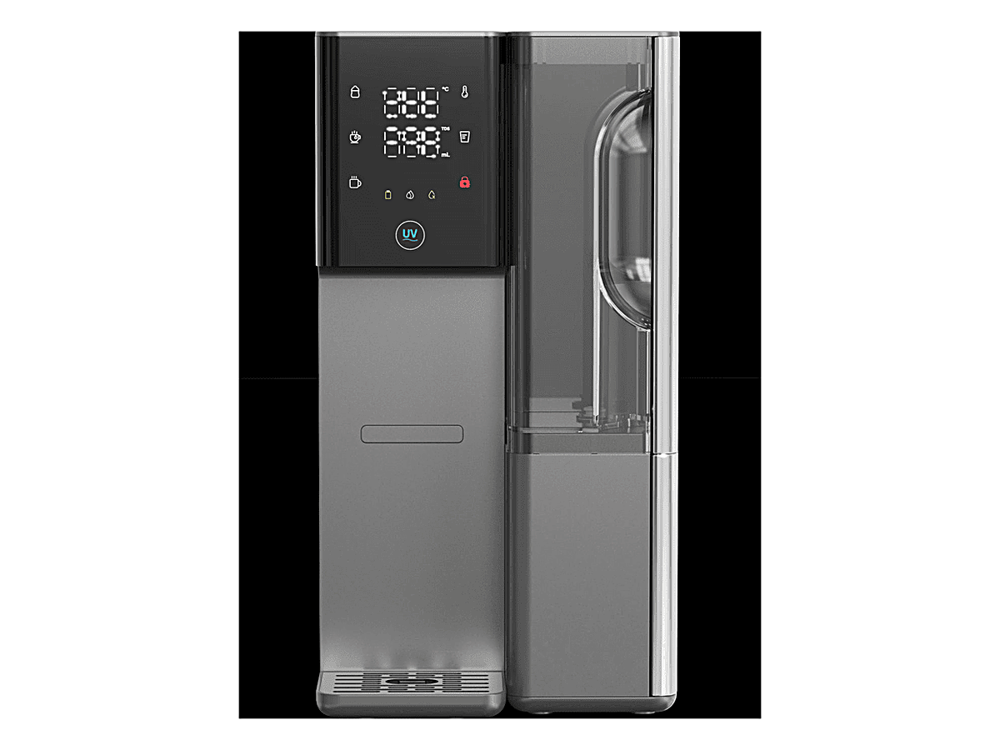

台式净水器
台式净水器RP-C07
带加热壶的 RO 净水器
SKU: RP-C07
起订量：询价时确认
台式 RO 净水器和饮水机 — 免安装型号，可供品牌商和经销商拓展产品线。
13 款型号。规格按型号及订单确认。
台式净水器带加热壶的 RO 净水器
SKU: RP-C07
起订量：询价时确认
 台式净水器
台式净水器一体式滤芯台式净水器
SKU: RP-C08
起订量：询价时确认
 台式净水器
台式净水器制冰冷热水 RO 净水器
SKU: RP-C09
起订量：询价时确认
 台式净水器
台式净水器压缩机制冷台式 RO 净水器
SKU: RP-C10
起订量：询价时确认
 台式净水器
台式净水器带现磨咖啡功能的 RO 净水器
SKU: RP-C11
起订量：询价时确认

台式净水器台式净水器
SKU: RP-C12
起订量：询价时确认

台式净水器即热式 RO 饮水机
SKU: RP-C13
起订量：询价时确认

台式净水器免安装即热净水器
SKU: RP-C03
起订量：询价时确认

台式净水器带可拆卸水壶的即热 RO 净水器
SKU: RP-C01
起订量：询价时确认

台式净水器电子制冷 RO 饮水机
SKU: RP-C02
起订量：询价时确认
 台式净水器
台式净水器台式富氢水 RO 饮水机
SKU: RP-C04
起订量：询价时确认
 台式净水器
台式净水器气泡水系列 — 三种变体（RP-C14 / RP-C05 / RP-C06）
SKU: RP-C14
起订量：询价时确认
 台式净水器
台式净水器气泡水与富氢水台式系列 (P90 / P90-1)
SKU: RP-C15
起订量：询价时确认
不是。选择冷热净水器前，请查看各型号规格表中列明的功能。温度设置与配置：按订单确认（Confirmed per order）。